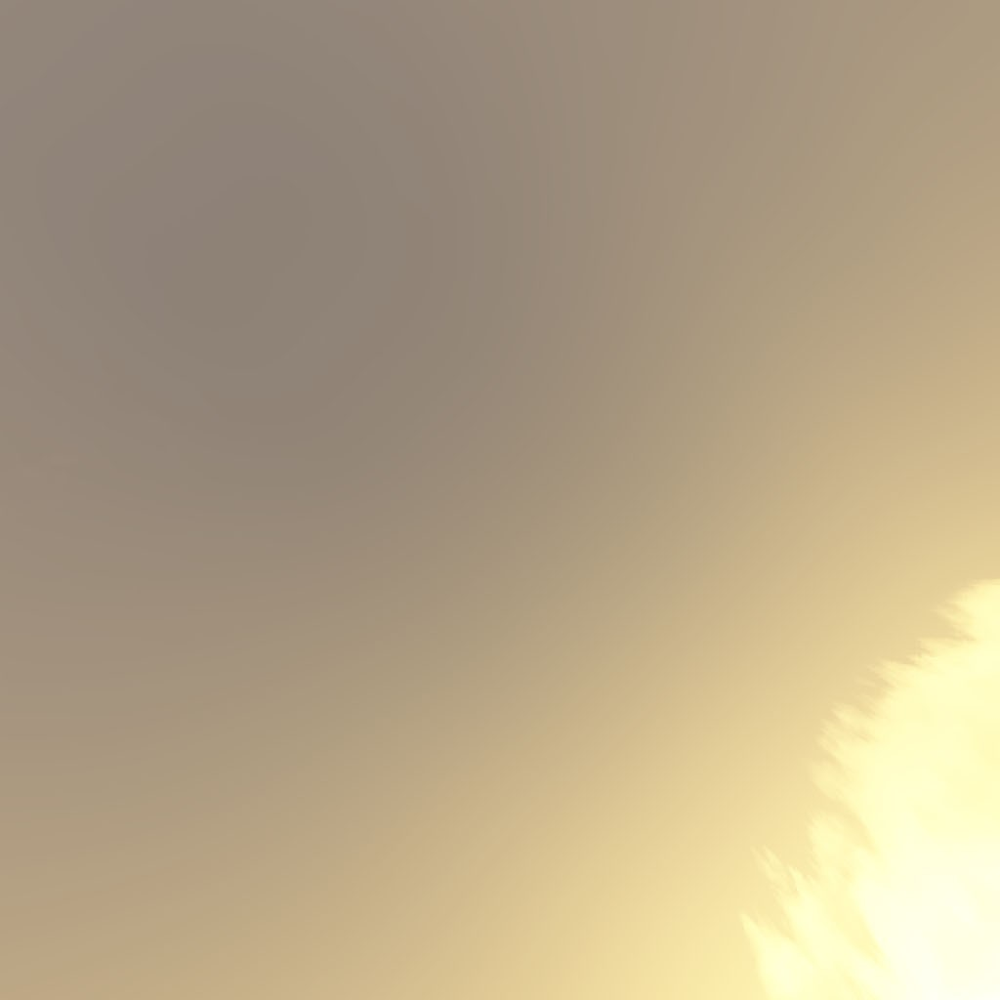
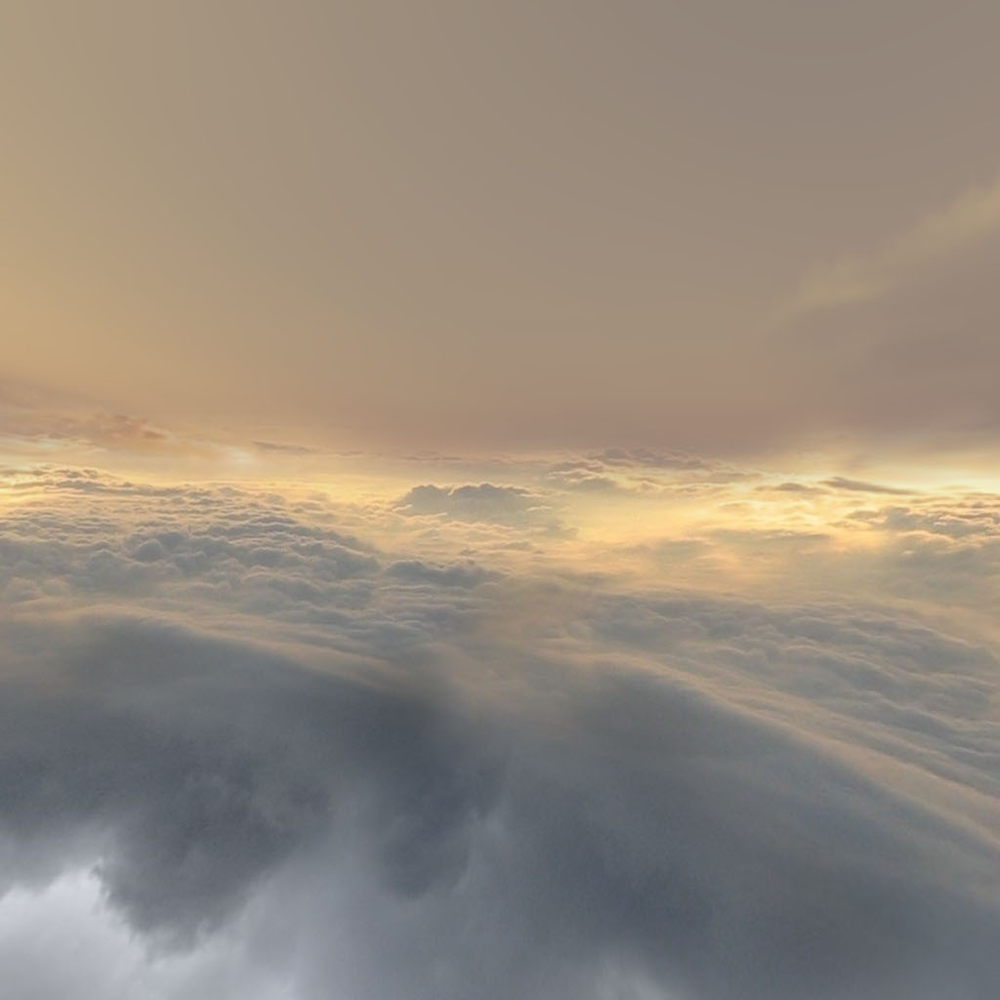
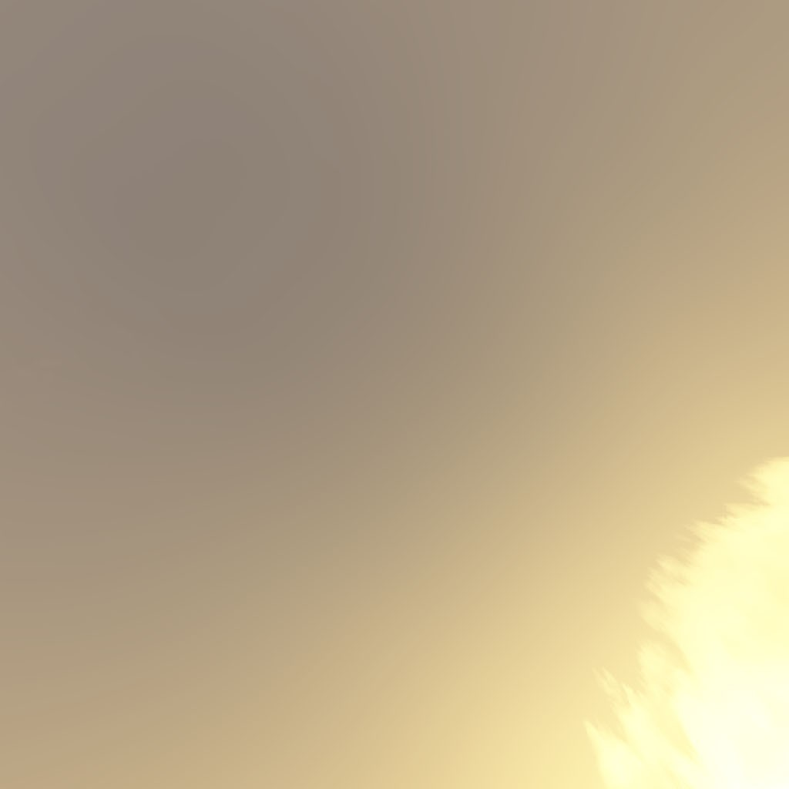
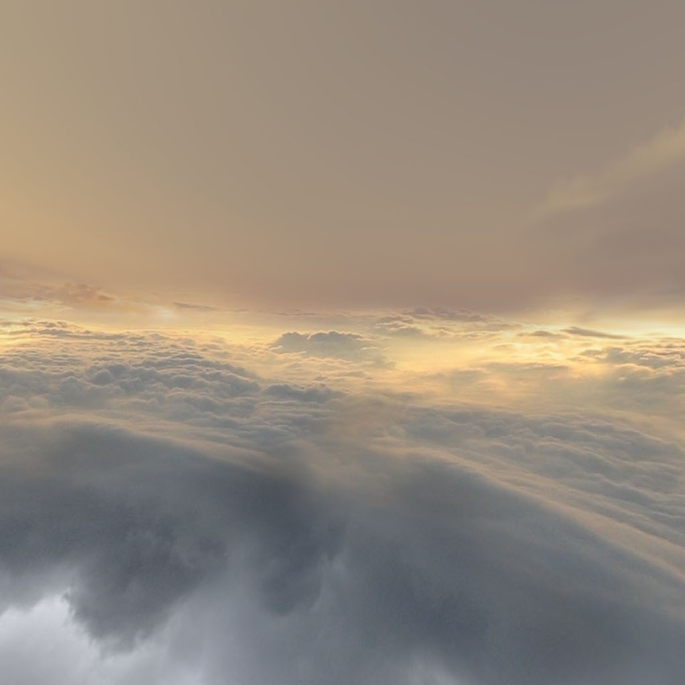

Loading...
WebGL Water
An experiment heavily based on code by Evan Wallace
Interactions:
- Draw on the water to make ripples
- Drag the background to rotate the camera
- Press SPACEBAR to pause and unpause
- Drag the sphere to move it around
- Press the L key to set the light direction
- Press the G key to toggle gravity
- Mouse wheel forward and backward to control zoom


 


